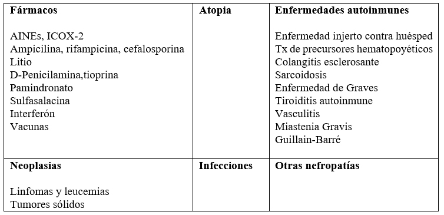
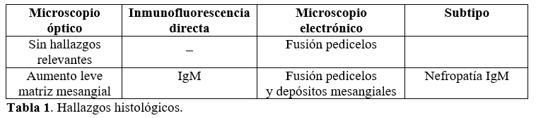
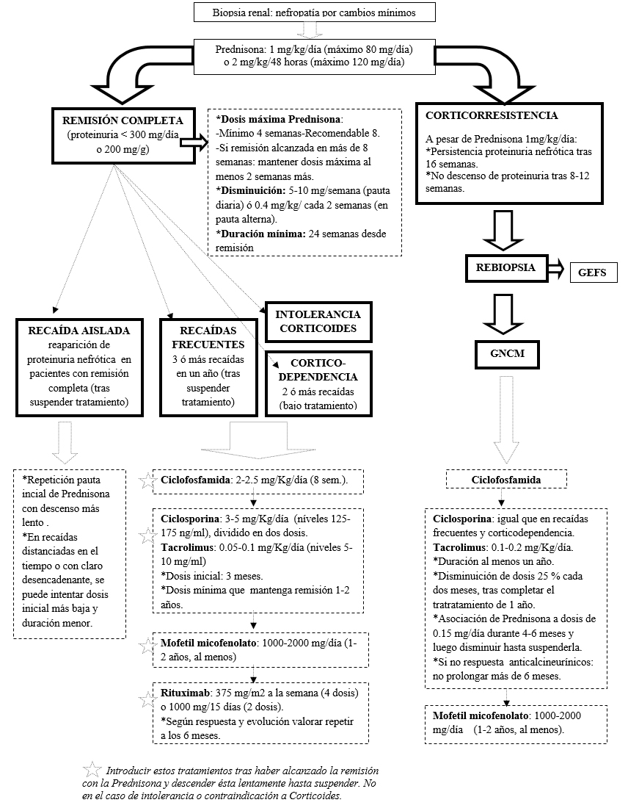

<div class="pages">
  <div data-page="projects" class="page no-toolbar no-navbar">
    <div class="page-content">
    
     <div class="navbarpages">
       <div class="navbar_home_link"><a href="toogle.html"></a></div>
       <div class="navbar_page_center"><b>Especialidades</b></div>
       <div class="menu_open_icon_white"><a href="#" class="open-panel"></a></div>
     </div>
     <div id="pages_maincontent">

          <h2 class="page_subtitle">Glomerulonefritis Primarias. Cambios mínimos</h2>
          <p><b>Autor/a:</b> Nuria Rodr&iacute;guez Mendiola, Nefrolog&iacute;a, Hospital Universitario Ram&oacute;n y Cajal, Madrid</p>
          <div class="page_single">         
              <div class="buttons-row">
                    <a href="#tab3" class="tab-link active button">Info</a>
                    <a href="#tab4" class="tab-link button">Etiolog&iacute;a</a>
                    <a href="#tab5" class="tab-link button">Epidemiolog&iacute;a</a>
                    <a href="#tab6" class="tab-link button">Cl&iacute;nica</a>
              </div>
              <div class="separadormenu_div"></div>
              <div class="buttons-row">
                    <a href="#tab7" class="tab-link button">Diagn&oacute;stico</a>
                    <a href="#tab8" class="tab-link button">Tratamiento </a>
                    <a href="#tab9" class="tab-link button">Pron&oacute;stico </a>
                    <a href="#tab10" class="tab-link button">Bibliograf&iacute;a </a>
              </div>
              
              <div class="tabs-simple">
                    <div class="tabs">
                          <div id="tab3" class="tab active">
                          		<br />
                                <h4>Informaci&oacute;n</h4>
                                <p class="justify">
                                    &bull;&nbsp; S&iacute;ndrome nefr&oacute;tico en ausencia de hallazgos relevantes en la biopsia renal (salvo la fusi&oacute;n de los pedicelos podocitarios en la microscop&iacute;a electrónica).<br />
									&bull;&nbsp; Glomerulopat&iacute;a primaria no proliferativa. Constituye junto con la glomerulonefritis focal y segmentaria el s&iacute;ndrome nefr&oacute;tico idiop&aacute;tico.
                                </p>
                          </div>
    
                          <div id="tab4" class="tab">
                          		<br />
                                <h4>Etiolog&iacute;a</h4>
                                <p class="nojustify">
                                    
                               	</p>     
                          </div> 
                          
                          <div id="tab5" class="tab">
                          		<br />
                                <h4>Epidemiolog&iacute;a</h4>
                                <p class="nojustify">
                                    &bull;&nbsp; Predomina en caucásicos y asiáticos.<br />
                                    &bull;&nbsp; Niños: causa más frecuente de síndrome nefrótico.<br />
                                    &bull;&nbsp; Adultos: causa el 10-15% de los síndromes nefróticos
                                </p>
                          </div>
                          
                          <div id="tab6" class="tab">
                          		<br />
                                <h4>Clínica:</h4>
                                	<p class="nojustify">
                                    &bull;&nbsp; Inicio abrupto. Antecedente de infección previa (no siempre).<br />
                                    &bull;&nbsp; Síndrome nefrótico:
                                    </p>
                                	<blockquote class="sin">
                                    	- Clínico: edema +/- oliguria.<br />
                                    	- Bioquímico puro: proteinuria nefrótica (≥ 3,5 g/24 h o 2000 mg/g), hipoalbuminemia y dislipemia.
                                    </blockquote>
                                    <p class="nojustify">
                                    &bull;&nbsp; Menos frecuente: microhematuria (presente hasta en un 30%) y/o deterioro de función renal (prerrenal por diurético o tercer espacio).<br />
                                    &bull;&nbsp; Complicaciones del síndrome nefrótico: fenómenos trombóticos e infecciones.
                                	</p>
                    	</div>
                    	<div id="tab7" class="tab">
                          		<br />
                                <h4>Diagnóstico:</h4>
                                <p class="nojustify">
                                    &bull;&nbsp; <b>Niños: </b>diagnóstico clínico. Tratamiento empírico con corticoides en todo niño con síndrome nefrótico:
								</p>
                                	<blockquote class="sin">
                                   		- Respuesta a corticoides &rarr; diagnóstico de cambios mínimos.<br />
                                    	- Corticorresistencia &rarr; biopsia.
                                    </blockquote>
                                <p class="nojustify">    
                                    &bull;&nbsp; <b>Adultos: </b>diagnóstico histológico, biopsia siempre.    
                                </p>
                                <p class="nojustify">
                                    
                               	</p>
                    	</div>
                        <div id="tab8" class="tab">
                          		<br />
                                <h4>Tratamiento:</h4>
                                <p class="nojustify">
                                    
                               	</p>
                    	</div>
                        <div id="tab9" class="tab">
                          		<br />
                                <h4>Pronóstico:</h4>
                                	<p class="nojustify">
                                    &bull;&nbsp; <b>Remisión completa</b> (proteinuria < 300 mg/día): 75-95% de los pacientes.<br />
                                    &bull;&nbsp; <b>Al menos 1 recaída</b> (reaparición de proteinuria nefrótica al suspender tratamiento): 50-75% de los pacientes.<br />
                                    &bull;&nbsp; <b>Recaídas frecuentes</b> (≥ 3 recaídas en un año tras suspender el tratamiento): 10-25% de los pacientes.<br />
                                    &bull;&nbsp; <b>Corticodependencia </b>(≥ 2 recaídas al disminuir dosis de corticoides, imposibilidad para suspenderlos): 25-30% de los pacientes.<br />
                                    &bull;&nbsp; <b>Corticorresistencia </b>(ausencia de respuesta a corticoides tras 8-16 semanas de corticoides a dosis máxima): 5-10% de los pacientes.
                                    </p>
                    	</div>
                        <div id="tab10" class="tab">
                          		<br />
                                <h4>Bibliografía:</h4>
                                	<p class="nojustify">
                                    1. Minimal-change disease in adults. General principles in the management of glomerular disease. KDIGO Clinical Practice Guideline for Glomerulonephritis. Kidney Int Suppl 2012;2:177-180.<br /><br />
									2. Fresnedo, G. Glomerulonefritis Primarias. Lorenzo V, López Gómez JM (Eds). Nefrología al Día. URL:		<br />
                                    <a href="#" onclick="window.open('http://www.revistanefrologia.com/es-monografias-nefrologia-dia-articulo-glomerulonefritis-primarias-10', '_system');">http://www.revistanefrologia.com/es-monografias-nefrologia-dia-articulo-glomerulonefritis-primarias-10.</a><br /><br />
                                    3. Registro de Glomerulonefritis Sociedad Española de Nefrología. Datos 2010. http://www.senefro.org.<br /><br />
                                    4. Meyrier A. Etiology, clinical features, and diagnosis of minimal change disease in adults. In: UpToDate, Post TW (Ed), UpToDate, Waltham, MA. (Accessed on December, 2016.)<br /><br />
                                    5. Meyrier A. Treatment of minimal change disease in adults. In: UpToDate, Post TW (Ed), UpToDate, Waltham, MA. (Accessed on December, 2016.)<br /><br />
                                    6. Praga M. Tratamiento general y específico de las glomerulonefritis. En Nefrología Clínica. Ed Panamericana, 3º ed, 2008:391-398.

                                    </p>
                    	</div>
              </div>        
          </div>     
      </div>  
    </div>
  </div>
</div>